Breakthroughs in Complex Analysis#
“The shortest path between two truths in the real domain passes through the complex domain.” – attributed to Jacques Hadamard
Complex numbers entered mathematics as a device for solving cubic
equations. Complex analysis began when mathematicians started to treat
them as a plane on which functions could be differentiated and
integrated. Differentiability turns out to be far more restrictive
there than on the real line, and that rigidity is what makes the
theory powerful. This chronology traces the ideas behind
mathematicskit.complex_analysis, from Euler’s formula, through
Cauchy’s integral calculus, to Riemann’s geometric view of functions as
conformal maps.
1748 – Euler’s Formula#
In his Introductio in analysin infinitorum Leonhard Euler compared the power series of the exponential, sine, and cosine and found
which makes \(e^{i\pi} + 1 = 0\) a special case. The formula turned trigonometry into algebra with exponentials, and it gave every complex number a polar form \(z = re^{i\theta}\). It also shows that the complex exponential is periodic, with period \(2\pi i\).
Implementation: mathematicskit.complex_analysis.systems.contours.circle_contour()
parametrizes circles as \(c + re^{it}\). The example traces
\(e^{i\theta}\) around the unit circle and uses
domain_coloring()
to show the \(2\pi i\) periodicity of \(e^z\).
References: L. Euler, Introductio in analysin infinitorum, vol. 1 (Lausanne, 1748), Ch. 8, §138.
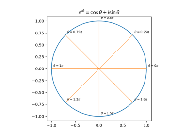
Euler’s formula: e^{i theta} = cos theta + i sin theta
1797-1806 – Wessel and Argand’s Complex Plane#
For two centuries after Rafael Bombelli used them to solve cubics in 1572, “imaginary” numbers were rules for calculation with no meaning of their own. The Norwegian-Danish surveyor Caspar Wessel, in a paper read to the Royal Danish Academy in 1797, and the Paris bookkeeper Jean-Robert Argand, in a pamphlet of 1806, independently gave them one: \(a + bi\) is the point \((a, b)\) of a plane. Addition is vector addition, and multiplication by \(re^{i\varphi}\) rotates by \(\varphi\) and scales by \(r\), so
Multiplying by \(i\) is a quarter turn, which makes \(i^2 = -1\) a half turn. Wessel’s paper went unnoticed for a century. Gauss’s 1831 advocacy made the plane standard, and it is the setting of everything else on this page.
Implementation: mathematicskit.complex_analysis.systems.conformal_maps.map_grid()
maps a coordinate grid through \(z \mapsto wz\), showing
multiplication as a rotation and scaling, drawn with
plot_mapped_grid().
References: C. Wessel, “Om Directionens analytiske Betegning,” Nye Samling af det Kongelige Danske Videnskabernes Selskabs Skrifter 5 (1799), 469-518 (read 1797); J.-R. Argand, Essai sur une manière de représenter les quantités imaginaires dans les constructions géométriques (Paris, 1806).
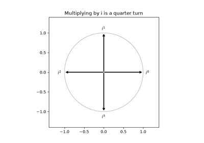
Wessel and Argand’s complex plane: multiplication rotates and scales
1799 – The Fundamental Theorem of Algebra#
Every polynomial of degree \(n \ge 1\) with complex coefficients has exactly \(n\) complex roots, counted with multiplicity. Jean le Rond d’Alembert (1746), Euler, and Lagrange all attempted proofs. Carl Friedrich Gauss criticized them in his 1799 doctoral dissertation and gave a largely geometric proof of his own, which still assumed a topological fact about curves that was only proved in 1920; he published three further proofs, the last in 1849. The cleanest modern proof counts windings. On a large circle \(|z| = R\), \(p(z) \approx z^n\) winds \(n\) times around 0. On a tiny circle around a point that is not a root, it winds 0 times. The winding number can only change when the image curve crosses 0, and by the argument principle it equals the number of roots inside.
Implementation: mathematicskit.complex_analysis.systems.residues.argument_principle()
counts the winding of \(p(\gamma)\) about 0 on circles from
circle_contour().
The example checks the count against numpy.roots() as the radius
grows to enclose all \(n\) roots.
References: C. F. Gauss, Demonstratio nova theorematis omnem functionem algebraicam rationalem integram unius variabilis in factores reales primi vel secundi gradus resolvi posse (Helmstedt, 1799); B. Fine and G. Rosenberger, The Fundamental Theorem of Algebra (Springer, 1997).
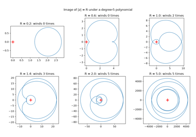
The fundamental theorem of algebra, by winding numbers
1814 – The Cauchy-Riemann Equations#
Jean le Rond d’Alembert (1752, in fluid dynamics) and Euler (1777) had met the equations
for the real and imaginary parts of \(f = u + iv\). Augustin-Louis Cauchy derived them in his 1814 memoir on definite integrals, published in 1827. Bernhard Riemann’s 1851 dissertation made them the definition of a complex function: \(f\) is complex differentiable exactly when its parts satisfy the equations. Functions like \(\bar z\) or \(|z|^2\), which are smooth as maps of the plane, fail them.
Implementation: mathematicskit.complex_analysis.systems.holomorphic.cauchy_riemann()
estimates \(u_x, u_y, v_x, v_y\) with
central_difference()
and reports the residual of the equations.
complex_derivative()
estimates \(f'(z)\). The tests confirm that the residual vanishes
for \(z^3\), \(e^z\), \(\sin z\), and \(1/z\), and has
the predicted nonzero values for \(\bar z\), \(|z|\), and
\(\operatorname{Re} z\).
References: A.-L. Cauchy, “Mémoire sur les intégrales définies,” Mémoires présentés par divers savants à l’Académie royale des sciences 1 (1827), 599-799 (read 1814); B. Riemann, Grundlagen für eine allgemeine Theorie der Functionen einer veränderlichen complexen Grösse (Göttingen, 1851).
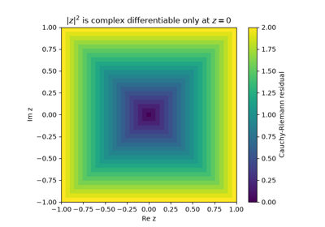
The Cauchy-Riemann equations: u_x = v_y, u_y = -v_x
1825 – Cauchy’s Integral Theorem#
In a memoir on definite integrals “taken between imaginary limits,” Cauchy showed that the integral of a holomorphic function between two points does not depend on the path, provided no singularity lies between the paths. Equivalently, around any closed contour \(\gamma\) bounding a region where \(f\) is holomorphic,
Cauchy’s proof assumed \(f'\) continuous. Édouard Goursat removed that assumption in 1900. The theorem fails as soon as a singularity is enclosed: \(\oint dz/z = 2\pi i\) around the origin, which is the seed of the residue calculus.
Implementation: mathematicskit.complex_analysis.systems.contours.contour_integral()
integrates \(f(\gamma(t))\gamma'(t)\) with scipy.integrate.quad()
(complex_func=True) on each smooth piece of a
Contour built by
circle_contour()
or polygon_contour().
winding_number()
computes \(\frac{1}{2\pi i}\oint dz/(z - z_0)\). The tests check
\(\oint z^n\,dz = 0\) for \(n \ne -1\), the integral of an
entire function around a triangle, and Green’s-theorem area
\(\oint \bar z\,dz = 2i\cdot\text{area}\).
References: A.-L. Cauchy, Mémoire sur les intégrales définies, prises entre des limites imaginaires (Paris, 1825); E. Goursat, “Sur la définition générale des fonctions analytiques, d’après Cauchy,” Transactions of the American Mathematical Society 1 (1900), 14-16.
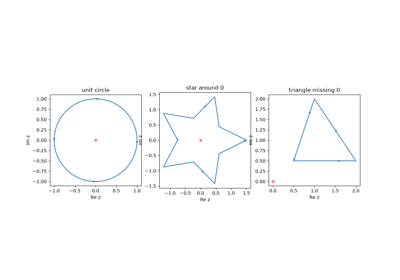
Cauchy’s integral theorem: the integral of a holomorphic function around a closed contour is zero
1826 – Cauchy’s Calculus of Residues#
Cauchy introduced the residue of a function at a pole, the coefficient \(a_{-1}\) of \(1/(z - z_0)\) in its expansion there, as a “new kind of calculus analogous to the infinitesimal calculus.” The integral around a closed contour then reduces to a sum over the enclosed singularities:
The residue theorem evaluates many real integrals that resist every real-variable technique, by closing the real line with a large arc.
Implementation: mathematicskit.complex_analysis.systems.residues.residue()
computes \(a_{-1}\) on a small circle with the periodic
trapezoidal rule, which converges geometrically for these integrands.
residue_theorem()
computes both sides of the theorem in a
ResidueTheoremResult.
The tests check residues at simple poles, at a fourth-order pole, and at
the essential singularity of \(e^{1/z}\), and they evaluate
\(\int_{\mathbb R} dx/(1 + x^2) = \pi\) by residues.
References: A.-L. Cauchy, “Sur un nouveau genre de calcul analogue au calcul infinitésimal,” Exercices de mathématiques 1 (1826), 11-24.
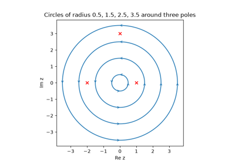
Cauchy’s residue theorem: the contour integral is 2 pi i times the enclosed residues
1831 – Cauchy’s Integral Formula#
In exile in Turin, Cauchy found that a holomorphic function inside a contour is determined entirely by its values on the contour:
It follows that a function differentiable once in the complex sense is differentiable infinitely often and equals its Taylor series in any disk where it is holomorphic. Cauchy used these results for his “calculus of limits,” which bounded the errors of power-series solutions in celestial mechanics.
Implementation: mathematicskit.complex_analysis.systems.contours.cauchy_integral_formula()
evaluates the formula for any \(n\) by
contour_integral().
The tests recover \(e^{z_0}\) and its first three derivatives from
values on a circle, and \(\cos z_0\) from \(\sin z\) on a
square.
References: A.-L. Cauchy, “Sur la mécanique céleste et sur un nouveau calcul appelé calcul des limites” (Turin, 1831); F. Smithies, Cauchy and the Creation of Complex Function Theory (Cambridge University Press, 1997), Ch. 6.
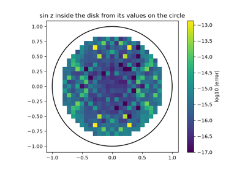
Cauchy’s integral formula: boundary values determine f and every derivative
1843 – Laurent Series#
Near an isolated singularity a function has no Taylor series, but it still has an expansion if negative powers are allowed. Pierre Alphonse Laurent submitted the theorem to the Paris Academy in 1843; Karl Weierstrass had found it in 1841 in a paper not published until 1894. A function holomorphic in an annulus \(r < |z - a| < R\) equals
for any \(r < \rho < R\). The coefficient \(a_{-1}\) is the residue, and the negative-power part classifies the singularity: removable, a pole, or essential. The same function has different expansions in different annuli, separated by its singularities.
Implementation: mathematicskit.complex_analysis.systems.contours.contour_integral()
computes each coefficient directly from the integral formula. The
example recovers the closed-form coefficients of
\(1/((z-1)(z-2))\) in the three annuli around 0 and shows the
partial sums converging inside \(1 < |z| < 2\).
laurent_coefficients()
computes every coefficient at once: the trapezoidal rule on a circle
turns the integrals into one numpy.fft.fft(). The tests check it
against the Taylor series of \(e^z\), the two expansions of
\(1/(z(1-z))\), and the residue.
References: P. A. Laurent, “Extension du théorème de M. Cauchy relatif à la convergence du développement d’une fonction suivant les puissances ascendantes de la variable,” Comptes Rendus 17 (1843), 348-349 (report by Cauchy); K. Weierstrass, “Darstellung einer analytischen Function einer complexen Veränderlichen, deren absoluter Betrag zwischen zwei gegebenen Grenzen liegt” (1841), in Mathematische Werke, vol. 1 (Berlin, 1894), 51-66.
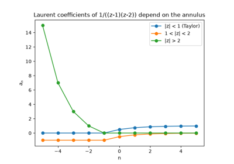
Laurent series: expansions with negative powers in an annulus
1844 – Liouville’s Theorem#
A function holomorphic on the whole plane (an entire function) that is bounded must be constant. Joseph Liouville stated the result in 1844 for doubly periodic functions, and Cauchy published a proof of the general statement the same year. It follows from Cauchy’s integral formula on a circle of radius \(R\) around \(a\), which gives the Cauchy estimates
If \(|f| \le M\) everywhere, letting \(R \to \infty\) forces \(f'(a) = 0\) at every point. So \(\sin z\) and \(e^z\), bounded on the real line, must grow without bound off it. The theorem also gives a two-line proof of the fundamental theorem of algebra: if \(p\) had no root, \(1/p\) would be bounded and entire.
Implementation: mathematicskit.complex_analysis.systems.contours.cauchy_integral_formula()
computes derivatives from contour integrals. The example evaluates the
Cauchy bounds for a polynomial and for \(\sin z\) on growing
circles.
References: J. Liouville, lectures of 1847 published by C. W. Borchardt, “Leçons sur les fonctions doublement périodiques,” Journal für die reine und angewandte Mathematik 88 (1880), 277-310; A.-L. Cauchy, “Mémoires sur les fonctions complémentaires,” Comptes Rendus 19 (1844), 1377-1384.
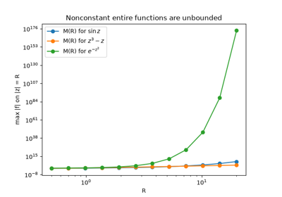
Liouville’s theorem: a bounded entire function is constant
1851 – Riemann’s Mapping Theorem#
Riemann’s dissertation treated complex functions geometrically, as maps of one region of the plane onto another. Where \(f' \ne 0\), such a map rotates and scales every small neighbourhood by \(f'(z)\), so it preserves angles: it is conformal. Riemann asserted that every simply connected region other than the whole plane can be mapped conformally and one-to-one onto the unit disk. His argument relied on the Dirichlet principle, which Karl Weierstrass criticized. William Fogg Osgood gave the first rigorous proof in 1900. For the upper half-plane the map is explicit: the Cayley transform \(w = (z - i)/(z + i)\).
Implementation: mathematicskit.complex_analysis.systems.conformal_maps.mobius_transform()
evaluates Möbius transformations \((az + b)/(cz + d)\), including
the Cayley transform, and
map_grid()
maps a coordinate grid through any function. The tests check that the
Cayley transform sends the real axis to the unit circle and the upper
half-plane into the disk, that composition corresponds to the matrix
product, that the cross-ratio is invariant, and that a conformal map
preserves right angles.
References: B. Riemann, Grundlagen für eine allgemeine Theorie der Functionen einer veränderlichen complexen Grösse (Göttingen, 1851); W. F. Osgood, “On the existence of the Green’s function for the most general simply connected plane region,” Transactions of the American Mathematical Society 1 (1900), 310-314.
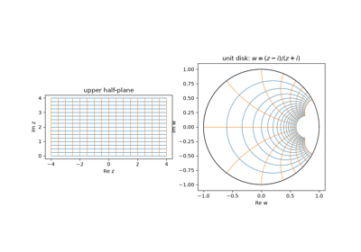
Riemann’s mapping theorem: the upper half-plane mapped conformally onto the disk
1855 – Möbius Transformations#
August Ferdinand Möbius’s 1855 memoir on Kreisverwandtschaft (“circle relationship”) studied the maps of the extended plane
They are the only one-to-one conformal maps of the Riemann sphere onto itself, and they send circles and lines to circles and lines, where a line is a circle through \(\infty\). A circle through the pole \(z = -d/c\) becomes a line. Composition corresponds to multiplying the matrices \(\begin{pmatrix} a & b\\ c & d\end{pmatrix}\), and the cross-ratio of four points is invariant. Felix Klein’s 1872 Erlangen program later recognized them as the symmetries of inversive geometry, and Henri Poincaré used them as the isometries of hyperbolic geometry.
Implementation: mathematicskit.complex_analysis.systems.conformal_maps.mobius_transform()
evaluates the map on circles from
circle_contour().
The example fits a circle to each image to a residual of about
\(10^{-15}\), and shows that a circle through the pole maps to a
line.
classify_mobius()
sorts a transformation into elliptic, parabolic, hyperbolic, or
loxodromic by \((a+d)^2/(ad-bc)\) and returns its fixed points.
References: A. F. Möbius, “Die Theorie der Kreisverwandtschaft in rein geometrischer Darstellung” (1855), in Gesammelte Werke, vol. 2 (Leipzig: Hirzel, 1886); T. Needham, Visual Complex Analysis (Oxford, 1997), Ch. 3.
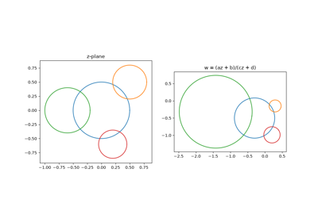
Möbius transformations map circles to circles
1855 – The Argument Principle#
In Turin in 1831 Cauchy counted the roots of an equation inside a contour by following how the argument of the function changes around it. In 1855 he published the general form, counting zeros and poles together:
The left side is the winding number of the image curve \(f(\gamma)\) about 0. Eugène Rouché’s 1862 theorem and the Nyquist stability criterion of control theory both follow from it.
Implementation: mathematicskit.complex_analysis.systems.residues.argument_principle()
counts \(N - P\) by integrating \(f'/f\) when \(f'\) is
given. Otherwise it unwraps the phase of \(f\) along the contour
(numpy.unwrap()). The tests count zeros and poles with
multiplicity by both methods, and match root counts in the unit disk
against numpy.roots().
References: F. Smithies, Cauchy and the Creation of Complex Function Theory (Cambridge University Press, 1997), 177; L. V. Ahlfors, Complex Analysis, 3rd ed. (McGraw-Hill, 1979), Ch. 4, Sec. 5.2.
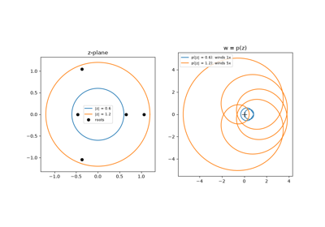
The argument principle: counting zeros minus poles by winding
1862 – Rouché’s Theorem#
Eugène Rouché, in an 1862 memoir on Lagrange’s series, proved that if \(|g(z)| < |f(z)|\) everywhere on a closed contour, then \(f\) and \(f + g\) have the same number of zeros inside it. The argument principle explains why. The image curves \(f(\gamma)\) and \((f+g)(\gamma)\) are like a person walking around a lamppost at 0 and a dog on a leash of length \(|g|\). If the leash is always shorter than the distance to the post, the dog circles the post exactly as many times as the person does. Choosing which term dominates on which circle locates roots without computing them: \(z^5 + 3z + 1\) has all five roots in \(|z| < 2\), where \(z^5\) dominates, and exactly one in \(|z| < 1\), where \(3z\) does.
Implementation: mathematicskit.complex_analysis.systems.residues.argument_principle()
counts zeros of the dominant term and of the full function on each
circle. The example checks the domination inequality and compares the
counts with numpy.roots().
rouche_condition()
checks the domination inequality on sampled contour points.
References: E. Rouché, “Mémoire sur la série de Lagrange,” Journal de l’École Polytechnique 22 (1862), 193-224; L. V. Ahlfors, Complex Analysis, 3rd ed. (McGraw-Hill, 1979), Ch. 4, Sec. 5.2.
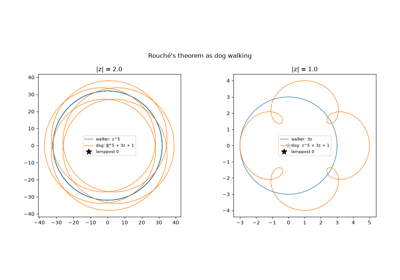
Rouché’s theorem: counting zeros by domination
1902-1910 – The Kutta-Joukowski Airfoil#
Potential flow around a circular cylinder is easy to write down with complex functions, but a cylinder is not a wing. Wilhelm Kutta (1902) and Nikolai Joukowski (1906) showed that the lift on a body equals \(\rho V \Gamma\), where \(\Gamma\) is the circulation, fixed by requiring smooth flow off a sharp trailing edge. In 1910 Joukowski used the conformal map
to carry the cylinder flow over to a wing section. It flattens the circle \(|z| = c\) onto the segment \([-2c, 2c]\), and a slightly shifted circle through \(z = c\) maps to an airfoil whose sharp trailing edge sits where \(J'(c) = 0\) and the map stops being conformal. Because conformal maps carry solutions of Laplace’s equation to solutions, the flow around the airfoil is known exactly. These profiles were the first wing sections designed by theory.
Implementation: mathematicskit.complex_analysis.systems.conformal_maps.joukowski_map()
maps circles from
circle_contour()
to airfoils, and
complex_derivative()
confirms that \(J'\) vanishes at the trailing edge.
References: W. M. Kutta, “Auftriebskräfte in strömenden Flüssigkeiten,” Illustrierte Aeronautische Mitteilungen 6 (1902), 133-135; N. E. Joukowski, “Über die Konturen der Tragflächen der Drachenflieger,” Zeitschrift für Flugtechnik und Motorluftschiffahrt 1 (1910), 281-284.
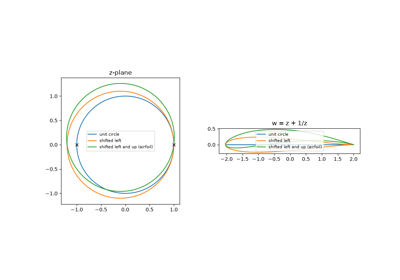
The Joukowski map: turning circles into airfoils
1998-2012 – Domain Coloring and Phase Portraits#
The graph of a complex function lives in four real dimensions, so it cannot be drawn directly. Computer graphics made a substitute practical: color each point \(z\) of the domain by the value \(f(z)\), with hue giving the argument and brightness the modulus. Frank Farris named the technique domain coloring in 1998, and Elias Wegert’s Visual Complex Functions (2012) developed these phase portraits into a systematic tool. Much of the theory on this page can be read off such a picture. Around a zero of order \(k\) every hue appears \(k\) times counter-clockwise, around a pole clockwise, branch cuts show as color discontinuities, and essential singularities show every color infinitely often, as the Casorati-Weierstrass theorem predicts.
Implementation: mathematicskit.complex_analysis.systems.domain_coloring.domain_coloring()
samples \(f\) on a grid from
complex_grid() and
builds the HSV image, drawn with
plot_domain_coloring().
References: F. A. Farris, review of T. Needham, Visual Complex Analysis, American Mathematical Monthly 105 (1998), 570-576; E. Wegert, Visual Complex Functions: An Introduction with Phase Portraits (Basel: Birkhäuser, 2012).
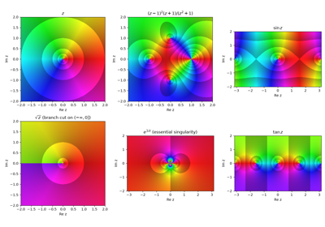
Domain coloring: reading zeros, poles, and branch cuts from a phase portrait